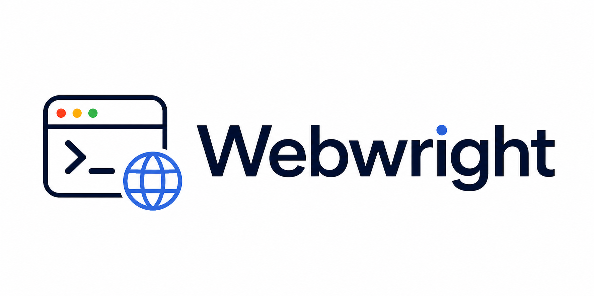
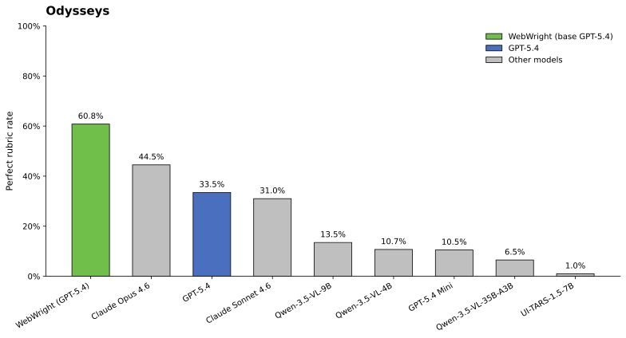
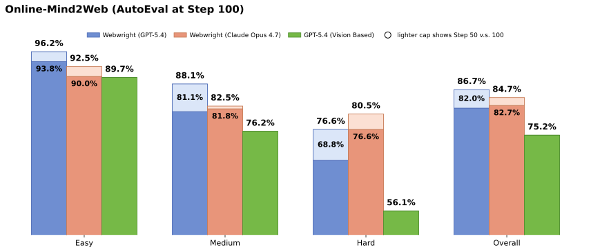

Disposable browsers
The agent can spawn fresh browser sessions, capture screenshots only when useful, inspect failures, and rerun scripts without being trapped in a single stateful page.

Terminal-native web agents
Webwright gives the model a terminal, a local workspace, and the freedom to write code that launches, inspects, and discards browser sessions. The output is not just a completed task, but a reusable program.
Paradigm shift
Traditional web agents keep one browser session alive and predict the next click, type, or scroll. Webwright separates the agent from that session: the browser can be launched, inspected, and discarded, while code, logs, screenshots, and outputs persist in the local workspace.
The agent can spawn fresh browser sessions, capture screenshots only when useful, inspect failures, and rerun scripts without being trapped in a single stateful page.
Date selection, form filling, filtering, comparison, and extraction can become loops and functions instead of long chains of primitive browser actions.
The durable output is a workspace: exploratory scripts, action logs, screenshots, final outputs, and eventually a reusable task program.
Minimal harness
The implementation is deliberately small: a Runner, a Model Endpoint, and a terminal Environment. Each is a single module, totaling roughly 1K lines of harness code, with no multi-agent orchestration or complex planning hierarchy.
$ python final_script.py open browser search live web pages capture screenshots write action log $ python -m webwright.tools.self_reflection evaluate critical points Status: success $ ls final_runs/run_1 final_script.py final_script_log.txt screenshots/ self_reflect_result.json
Workspace trace
The trace below makes the terminal-native loop visible. The left panel shows the workspace growing as the agent creates plans, scripts, logs, screenshots, and final-run artifacts; the terminal transcript shows the generated command and command_output that produced each observation.
Capability gallery
We show webwright can craft tools for user tasks, and converted to codex skills for repeated usage, which leads to token and time saving.
Challenges handled
Giving an agent a terminal is powerful, but it creates new failure modes. Webwright keeps the harness small while adding just enough structure around completion, context, and reuse.
The agent must generate a final script, rerun it in a fresh folder, save logs and screenshots, and pass a self-reflection judgement before done is accepted.
Long coding trajectories can exceed context limits, so history is periodically compacted into summaries while the workspace keeps the concrete artifacts.
Once solved, a task script can be parameterized, exported as a CLI, shared with coding agents, and reused instead of rediscovered from scratch.
Reported results
The report evaluates Webwright on live, long-horizon web benchmarks while preserving the simple terminal interface. The same pipeline also records critical-point screenshots, action logs, and reusable command-line tools.


Long-horizon browsing score, a 35.1% relative improvement over the previous reported SOTA.
GPT-5.4 accuracy on 300 live tasks across 136 sites with a 100-step budget.
Average GPT-5.4 cost per Online-Mind2Web task in the report's cost analysis.
Qwen3.5-9B on the hard split of Online-Mind2Web when augmented with crafted reusable tools.